One Gallery
Your phone's gallery, on your desktop.
The folders you choose, newest first and grouped by day. Made for KDE Plasma, and it runs on Windows too.
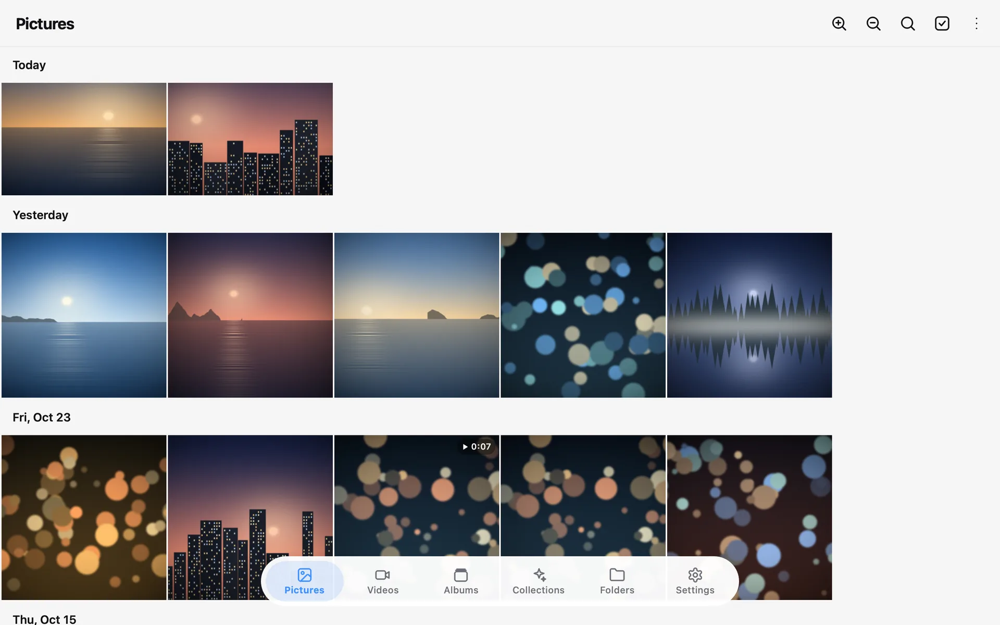
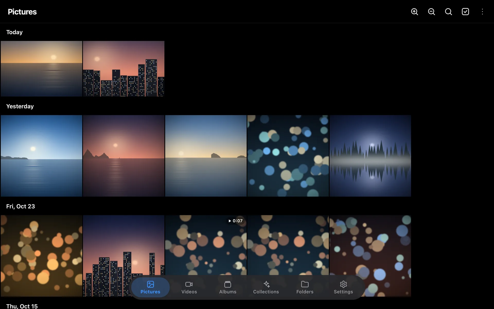
Every picture, in the order you took it.
One Gallery reads the folders you pick, including ones on other drives, and lays them out like the gallery on your phone: newest first, under day headers that stay in view as you scroll.
- Today, Yesterday, then dates like “Fri, Oct 23”
- A fast-scroll handle that shows the month as you drag
- Videos sit among your pictures, with their length on the tile
- Thumbnails load in the background, so scrolling stays smooth
Ctrl + mouse wheel changes the column count, like pinching on your phone.
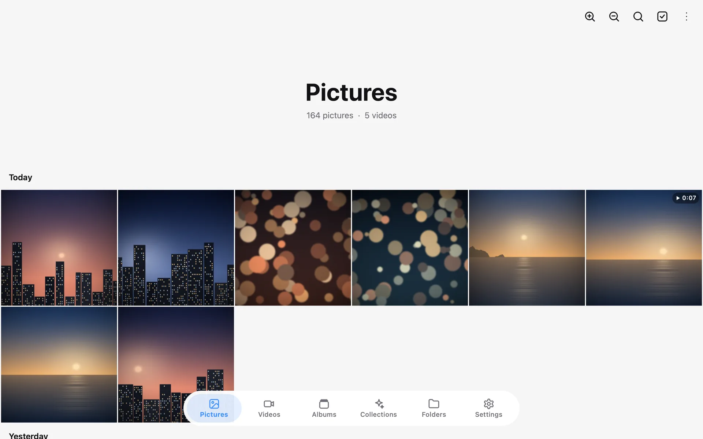
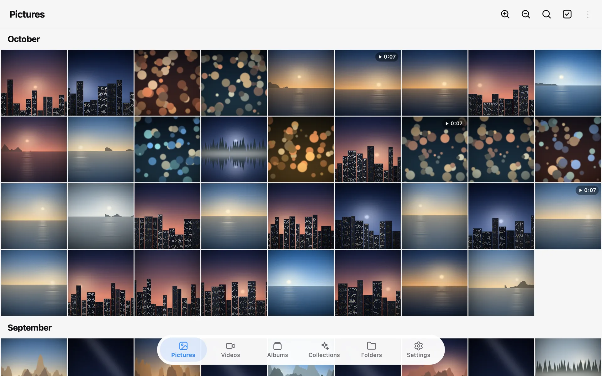
Black and white, or Material You.
Keep One UI's pure white and pure black, or let one colour tint the whole app the way Android 12 does. The navigation bar can be solid, or Liquid Glass that bends the photos behind it.
By default the accent follows your KDE accent colour, and changes when you change it.
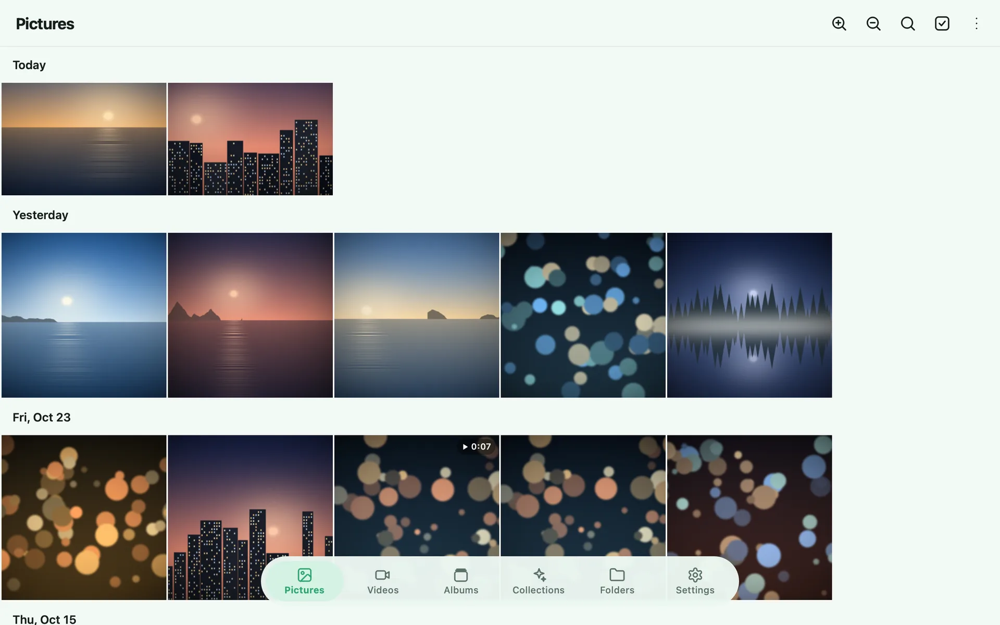
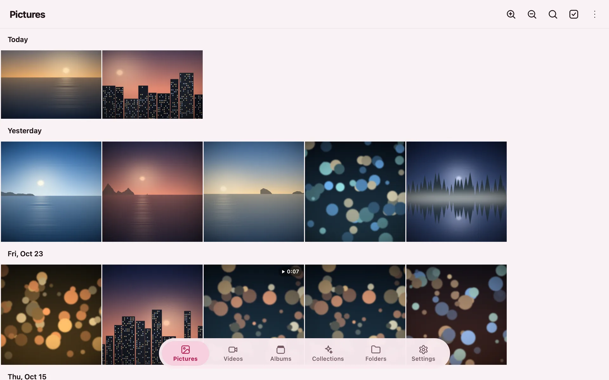
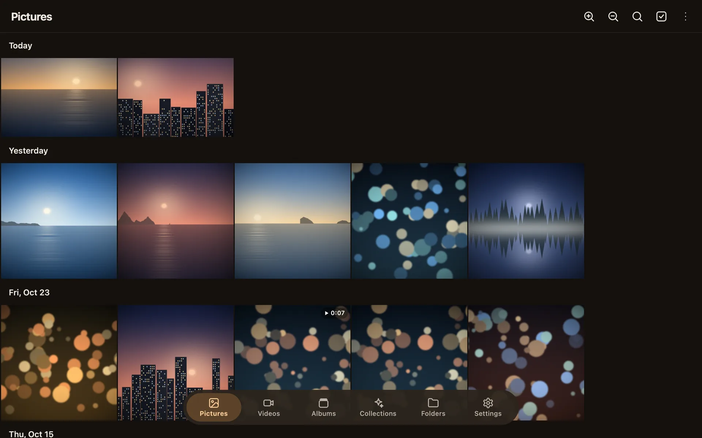
Look closer, then make it better.
Pictures open full screen on black. Swipe or use the arrow keys, pinch or scroll to zoom, and open Details for the date, size and path.
The editor crops, rotates and straightens, has 9 filters and 10 adjustments, and lets you hold to compare with the original. Save over the picture or as a copy, and revert to the original later.
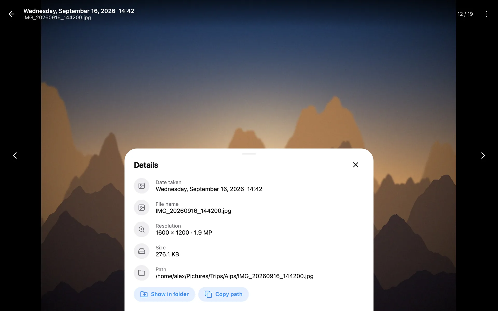
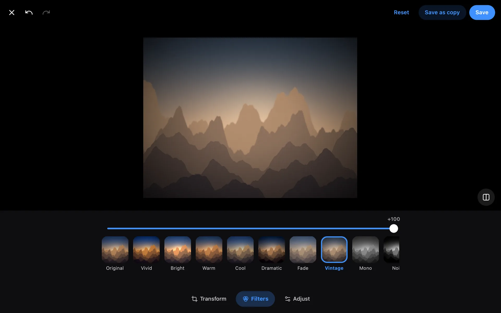
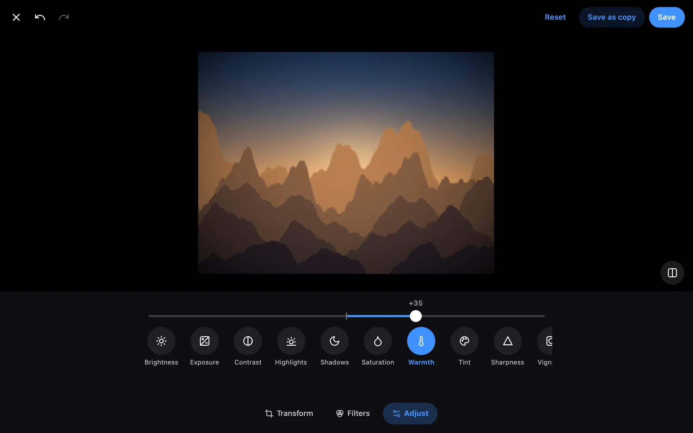
A private album that only opens with your password.
Pictures and videos you move in are encrypted and disappear from their folders and from the rest of One Gallery. Lock it again, and nothing private is left on screen.
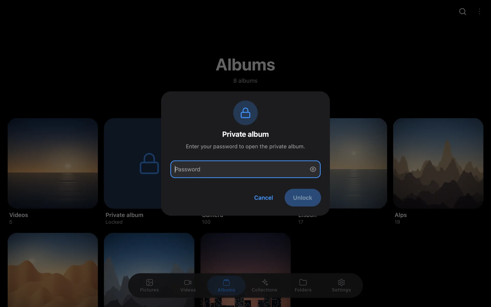
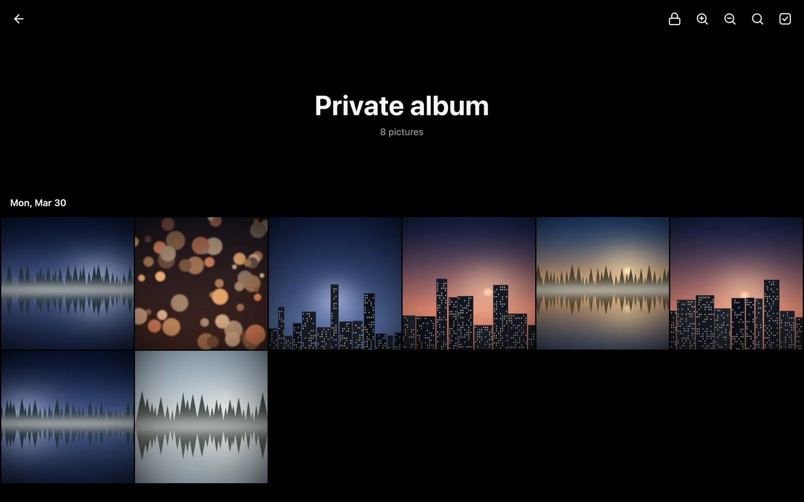
Stories, places and people.
Stories are slideshows of the pictures you took around today's date, one, two or more years ago. Places groups pictures by town and country from their GPS. People groups faces.
All of it runs on your computer. Nothing is uploaded.
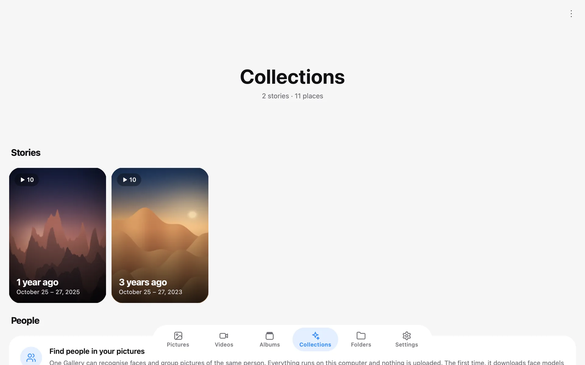
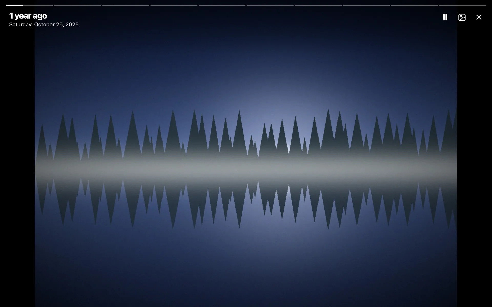
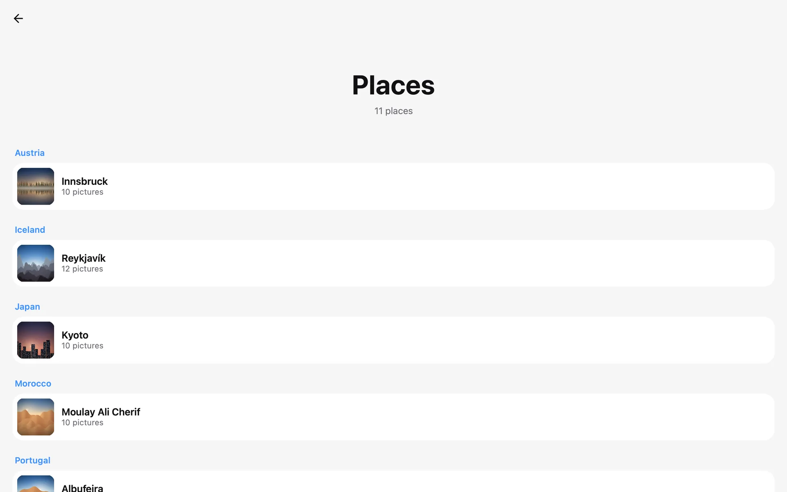
And the rest of what a gallery should do.
Videos
Play straight away, muted, in the viewer. Play video opens the built-in player with sound.
Albums
One album per folder or sub-folder, plus Favorites and Videos.
Selection
Right-click or long-press to select, or tick a day header to select the whole day.
Share like Dolphin
KDE Connect, Bluetooth, e-mail, Telegram, Nextcloud and the rest of KDE's Share menu.
Search
By file name, folder or date: “2025”, “October”, “oct 2024”.
Your image viewer
Open pictures from Dolphin or Explorer. Their folders aren't added to your library.
Set as wallpaper
Wallpaper, lock screen or both, and print or save as PDF with a live preview.
Other drives
Folders on unplugged drives are kept and marked unavailable, not removed.
KDE global menu
A full File, Edit, View, Go menu in Plasma's global menu, and native file dialogs.
Safe with your files
Removing a folder never deletes files. Delete moves pictures to the trash.
More screens
Install One Gallery
-
Get the code
git clone https://github.com/lochansaroy02/onegallery.git cd onegallery -
Install it as an app
Installs the system packages with pacman, sets up the app and adds it to the launcher. No root needed for the app itself.
./update.sh --install -
Open it
Search for One Gallery in the application launcher, or run
onegallery. Click Add folder and pick your Pictures folder.
Updating: run ./update.sh in the same folder. Your library, favorites and settings are never touched.
Optional extras for HEIC photos, People, live updates and the KDE share menu:
sudo pacman -S python-pillow-heif python-opencv python-watchdog purposeFor Windows 10 (version 1809 or newer) and Windows 11, 64-bit. No admin rights needed.
- Adds One Gallery to the Start menu, and to Open with for pictures and videos.
- Pick it in Settings › Apps › Default apps to open pictures from Explorer.
- The installer isn't code-signed yet, so SmartScreen may warn the first time. Choose More info, then Run anyway.
- Uninstall from Settings › Apps.
Questions
Does it move or change my files?
No. One Gallery only reads the folders you choose and keeps its own index. Removing a folder removes it from the index, never from disk. The one exception is the private album: pictures you move into it are encrypted and leave their folder, on purpose.
Where does it keep its data?
On Linux: settings in ~/.config/onegallery, the index, favorites and private album in ~/.local/share/onegallery, and thumbnails in ~/.cache/onegallery. On Windows: %APPDATA%\OneGallery and %LOCALAPPDATA%\OneGallery.
Does it work outside KDE Plasma?
It's made for Plasma, and it runs on other desktops too. The global menu, KDE's Share menu and setting the lock screen are Plasma features, so they're missing elsewhere.
Is anything uploaded?
No. The index, thumbnails, face grouping and private album all stay on your computer. There's no account. The only downloads are optional: face models for People, and a list of town names for Places.
I used LGallery. What happens to my library?
One Gallery is the new name. The first time it starts, it moves your settings, library, favorites and private album over by itself.
Is it free?
Yes. It's open source under the MIT licence.